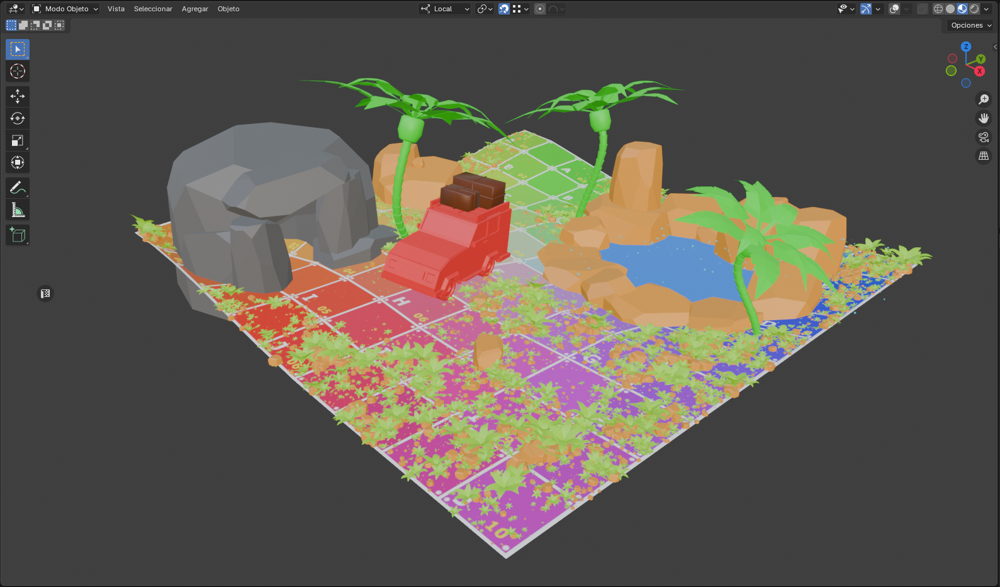
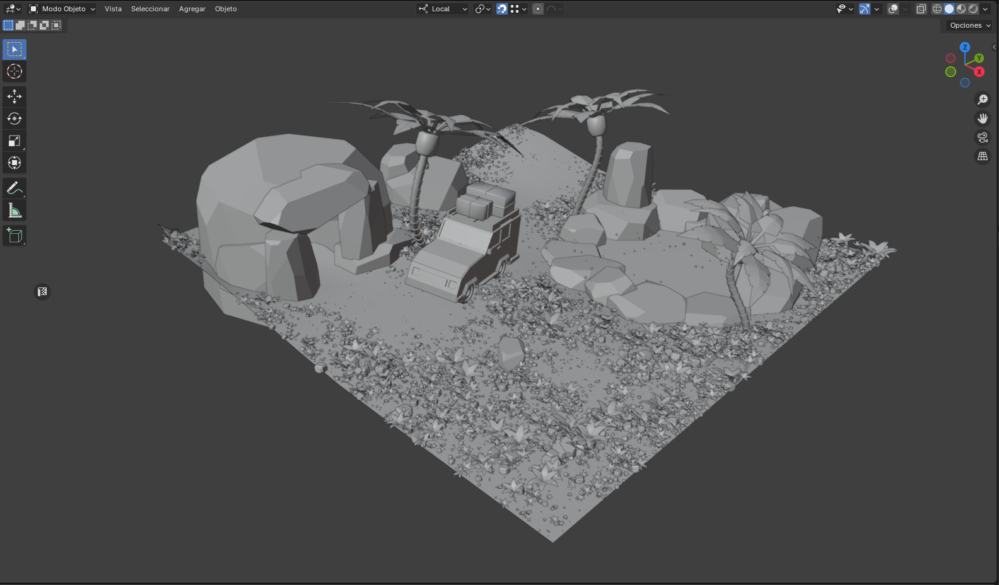
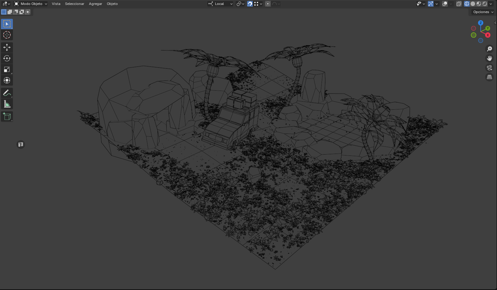

Low Poly Scene
Scene created to practice low-poly, scattering, shaders and materials.
Low poly scene triangle count: 11.606
Blender
Substance Painter



Scene created to practice low-poly, scattering, shaders and materials.
Low poly scene triangle count: 11.606